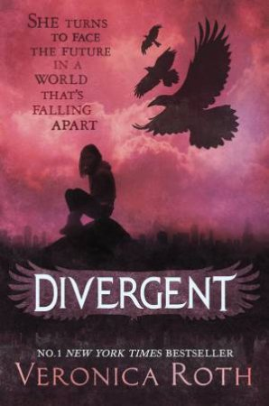

Thou shalt kill.
A world with no hunger, no disease, no war, no misery. Humanity has conquered all those things, and has even conquered death. Now scythes are the only ones who can end life—and they are commanded to do so, in order to keep the size of the population under control.
Citra and Rowan are chosen to apprentice to a scythe—a role that neither wants. These teens must master the “art” of taking life, knowing that the consequence of failure could mean losing their own.
It reminds me that in spite of our lofty ideals and the many safeguards to protect the Scythedom from corruption and depravity, we must always be vigilant, because power comes infected with the only disease left to us: the virus called human nature. THIS WAS SUCH A GOOD BOOK. I absolutely loved everything about it, the (non evil) characters, the writing, the plot, everything, and will probably be one of my favourite reads. READ IT NOW I DARE YOU.
The Hunger Games by Suzanne Collins
Rating:⭐⭐⭐⭐
"In the ruins of a place once known as North America lies the nation of Panem, a shining Capitol surrounded by twelve
outlying districts. The Capitol is harsh and cruel and keeps the districts in line by forcing them all to send one boy and
one girl between the ages of twelve and eighteen to participate in the annual Hunger Games, a fight to the death on live TV.
Sixteen-year-old Katniss Everdeen regards it as a death sentence when she steps forward to take her sister's place in the
Games. But Katniss has been close to dead before-and survival, for her, is second nature. Without really meaning to, she becomes
a contender. But if she is to win, she will have to start making choices that weigh survival against humanity and life against love."
4 stars because i really don't like peta. Did there really have to be a love interest?
Divergent by Veronica Roth

Rating:⭐⭐
In Beatrice Prior's dystopian Chicago world, society is divided into five factions, each dedicated to the cultivation of a particular virtue—Candor (the honest), Abnegation (the selfless), Dauntless (the brave), Amity (the peaceful), and Erudite (the intelligent). On an appointed day of every year, all sixteen-year-olds must select the faction to which they will devote the rest of their lives. For Beatrice, the decision is between staying with her family and being who she really is—she can't have both. So she makes a choice that surprises everyone, including herself.
During the highly competitive initiation that follows, Beatrice renames herself Tris and struggles alongside her fellow initiates to live out the choice they have made. Together they must undergo extreme physical tests of endurance and intense psychological simulations, some with devastating consequences. As initiation transforms them all, Tris must determine who her friends really are—and where, exactly, a romance with a sometimes fascinating, sometimes exasperating boy fits into the life she's chosen. But Tris also has a secret, one she's kept hidden from everyone because she's been warned it can mean death. And as she discovers unrest and growing conflict that threaten to unravel her seemingly perfect society, she also learns that her secret might help her save those she loves . . . or it might destroy her.
The world doesn't make much sense as this is just chicago in the future but everyone has one personality except for a special few who are normal.
music from Purple Planet Music. Book descriptions from Goodreads.